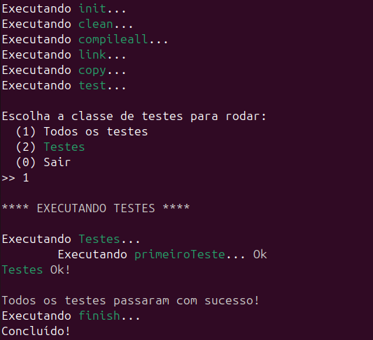

Para integrar com o cbuild, basta criar o CBuildFile na raiz do
projeto e executar os testes com o cbuild e as seguintes tarefas:
test, testbuild ou testbuildall
Para tanto, é necessário definir as propriedades "src.dir", "test.dir"
e "test.libs" no CBuildFile.
Se estiver no linux, é necessário também definir a propriedade
"test.linker.params"
Caso não tenha instalado o xutest e quiser incluí-lo manualmente no
projeto, precisa definir também as propriedades "test.include.dirs",
"test.lib.dirs".
Se o xutest já estiver instalado no sistema operacional, não precisa definir
as propriedades "test.include.dirs", "test.lib.dirs" e "test.libs".
Atenção: A propriedade "src.dir" deve ser definida e ter valor diferente do
diretório raiz do projeto ou parente dele.
Após configurado o CBuildFile com os caminhos dos includes, lib do xutest e
parâmetros para o comando que linka os arquivos de teste, é só criar os testes
na pasta da propriedade "test.dir".
Veja abaixo o exemplo de configuração básica do script CBuildFile:
src.dir=src
test.dir=test
test.libs=xutest
IF os != "windows"
# interpretado somente se estiver no linux
test.linker.params=-ldl -rdynamic
ENDIF
O exemplo acima assume que a pasta de testes é a pasta "test".
Caso não tenha instalado o cbuild e quiser inclur manualmente, faça
conforme o seguinte exemplo:
src.dir=src
test.dir=test
test.include.dirs=include
test.lib.dirs=.
test.libs=xutest
IF os != "windows"
# interpretado somente se estiver no linux
test.linker.params=-ldl -rdynamic
ENDIF
O exemplo acima assume que o diretório onde deve procurar o arquivo
"libxutest.a" é o diretório corrente. Para outro diretório, é só
alterar "test.lib.dirs". Claro, o exemplo acima assume que o nome da
static library do xutest tem o nome "libxutest.*", onde o "*" geralmente
corresponde a "a" ou "lib". Esse exemplo assume também que a os arquivos
de cabeçalho do xutest estão na pasta "include".
Agora, seguindo o exemplo anterior, siga os seguintes passos:
crie uma pasta "src" e uma pasta "test".
Copie o arquivo "main.cpp" para a pasta "test".
Agora execute o seguinte comando:
cbuild testbuildall
Você deve ver agora a seguinte saída:

Próxima aula
O próxima aula ensina como incluir o xutest no projeto sem instalar.